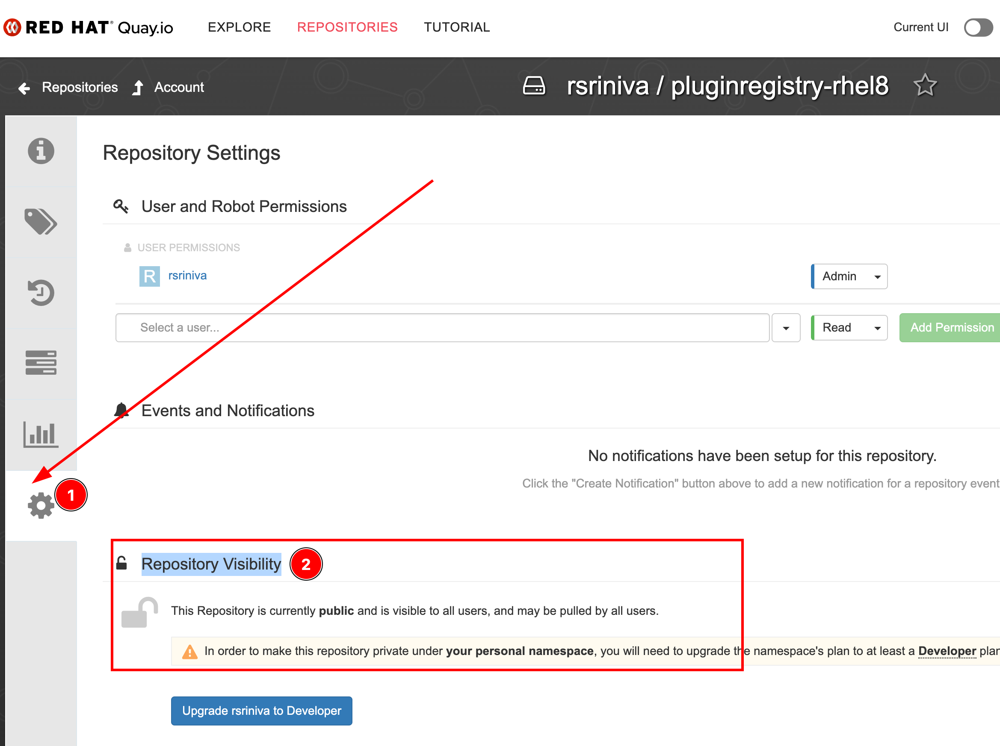

Custom Plugin Registry
In the previous section, you configured Dev Spaces to fetch VSCode plugin information from the public Open VSX registry and automatically install plugins at workspace start up.
In scenarios, where you need more tighter control over what plugins your developers are allowed to install, or if you have a completely offline set up, you need to run a custom version of the embedded plugin registry on your OpenShift cluster. This custom plugin registry will contain a curated list of VSCode plugins for your environment.
|
Building a custom plugin registry is a lengthy manual process with several moving parts. Unless you really need this feature, it is recommended to configure your Dev Spaces instance to use the public Open VSX registry as outlined in the previous sections. |
Lab: Building a Custom Embedded Open VSX Plugin Registry
Pre-requisites
You need the following to build a custom plugin registry container image:
-
A Linux x86_64 VM or machine with the following installed:
-
Git
-
Podman
-
Node.js version 18.20.3 or higher
-
jq
-
yq
-
-
A Red Hat Registry Service Account at https://access.redhat.com/RegistryAuthentication to pull the base UBI based container images for your custom container. You can use the credentials from your Red Hat Developer Account (https://developer.redhat.com) to access the container images.
-
A Quay.io account at https://quay.io to store your custom built plugin registry container image
|
The following instructions were tested on a Fedora 41 GNOME Workstation x86_64 VM. Builds on other machines (macOS, Windows) may not work and are not supported. |
Steps
-
Log in to the OpenShift cluster as the
adminuser using theocCLI.$ oc login -u admin OpenShift_API_URL -
If you completed the hands-on lab in the previous sections, your Dev Spaces instance is using the public Open VSX plugin registry to fetch plugins. Reset the
openVSXURLattribute in your CheCluster CR to point to the internal embedded plugin registry:$ oc patch checluster/devspaces \ -n openshift-devspaces \ --type='merge' \ -p '{"spec":{"components":{"pluginRegistry": {"openVSXURL": ""}}}}' -
Clone the source code the community Open VSX registry server. There are multiple branches in this repository corresponding to the Dev Spaces product versions:
$ git clone https://github.com/redhat-developer/devspaces.git $ cd devspaces/dependencies/che-plugin-registry $ git checkout devspaces-3.16-rhel-8 branch 'devspaces-3.16-rhel-8' set up to track 'origin/devspaces-3.16-rhel-8'. Switched to a new branch 'devspaces-3.16-rhel-8'Branches are named devspaces-$PRODUCT_VERSION-rhel-8. Replace$PRODUCT_VERSIONwith your Dev Spaces version. In this case, we are building for version 3.16. -
Edit the
openvsx-sync.jsonfile in theche-plugin-registryfolder. This file contains the list of plugins from https://open-vsx.org that you want to bundle into your custom plugin registry. Search for plugin in the public Open VSX registry and get their IDs and versions as outlined in the previous section. For this lab, we will add thedraw.ioandES7 React Snippetsplugin to the bottom of this list.[ { "id": "donjayamanne.githistory", "version": "0.6.20" }, ... { "id": "typefox.open-collaboration-tools", "version": "0.1.1" }, { "id": "hediet.vscode-drawio", "version": "1.6.6" }, { "id": "dsznajder.es7-react-js-snippets", "version": "4.4.3" } ]If you have a closed-source extension or an extension developed only for internal use in your organization, you can add the extension directly from a
.vsixfile by using a URL accessible to your custom plugin registry container:{ "id": "<publisher>.<name>", "download": "<url_to_download_vsix_file>", "version": "<extension_version>" } -
Review and run the
build.shscript that builds the custom registry image. You are not expected to make any changes to this script.$ ./build.sh -o <username> -r quay.io -t custom ... Generate artifacts ✔ Analyze che-editors.yaml file ✔ Generate v3/plugins/index.json file ✔ Generate v3/external_images.txt ✔ Write devfile.yamls in v3/plugins folder ... STEP 1/4: FROM registry.access.redhat.com/ubi8/nodejs-18:1-81 AS builder Trying to pull registry.access.redhat.com/ubi8/nodejs-18:1-81... ... Container 'che-openvsx:latest' successfully built ... 🚀 Created namespace hediet 🚀 Published hediet.vscode-drawio v1.6.6 🚀 Created namespace dsznajder 🚀 Published dsznajder.es7-react-js-snippets v4.4.3 ... COMMIT quay.io/username/pluginregistry-rhel8:custom ... Successfully tagged quay.io/username/pluginregistry-rhel8:custom ...Replace username with your Quay.io username, and you can pass a tag name to the
-tflag. Here we assign a tag namedcustom. -
The build should take anywhere between 45 minutes to an hour depending on your internet speed and your hardware capacity. After the build finishes, you must see a large 10GB+ container image for the custom plugin registry.
$ podman images REPOSITORY TAG SIZE quay.io/username/pluginregistry-rhel8 custom 10.8 GB registry.redhat.io/rhel8/postgresql-15 1-50.1708914865 510 MB registry.access.redhat.com/ubi8/nodejs-18 1-81 614 MB registry.access.redhat.com/ubi8/ubi 8.9-1028 213 MB -
Push the locally built image to your Quay.io registry.
$ podman push quay.io/<username>/pluginregistry-rhel8:custom -
Once the image is pushed, log in to your Quay.io account using a browser and navigate to the settings for this repository. Under the
Repository Visibilitysection change the visibility topublic. By default, container images pushed from the command line are markedprivate. If you fail to change the visibility to public, the Dev Spaces operator may fail to pull the custom image from Quay.io unless you take further steps. For simplicity, make the repository public for now.Figure 1. Make repository public in Quay.io -
Update the CheCluster CR and make Dev Spaces use the newly built custom container for the plugin registry. We override the deployment specifications for the plugin registry and point it to our new custom image in Quay.io.
$ oc patch checluster/devspaces \ -n openshift-devspaces \ --type='merge' \ -p '{"spec":{"components":{"pluginRegistry":{"deployment":{"containers":[{"image":"quay.io/rsriniva/pluginregistry-rhel8:custom"}]}}}}}' -
Check that the
plugin-registrypod has restarted and is running.$ oc get pods -n openshift-devspaces NAME READY STATUS che-gateway-6757dcd74f-z6798 4/4 Running devspaces-587dc9fbdd-vzr75 1/1 Running ... plugin-registry-69c69ff5b7-2g4lg 1/1 Running -
Launch a new workspace using the Git repository URL https://github.com/rsriniva/devspaces-plugins-demo, and check the available extensions in the
Extensionsview of the workspace IDE. You should see the two new plugins you added to the custom embedded plugin registry. After the workspace is started, the two plugins should be automatically installed since the repository containers a.vscodefolder with a recommendations JSON file with the list of plugins to install automatically. -
Search the public Open VSX registry for plugins that are NOT in the
openvsx-sync.jsonfile, and verify that only plugins added to the JSON file before the custom build show up in the workspace.